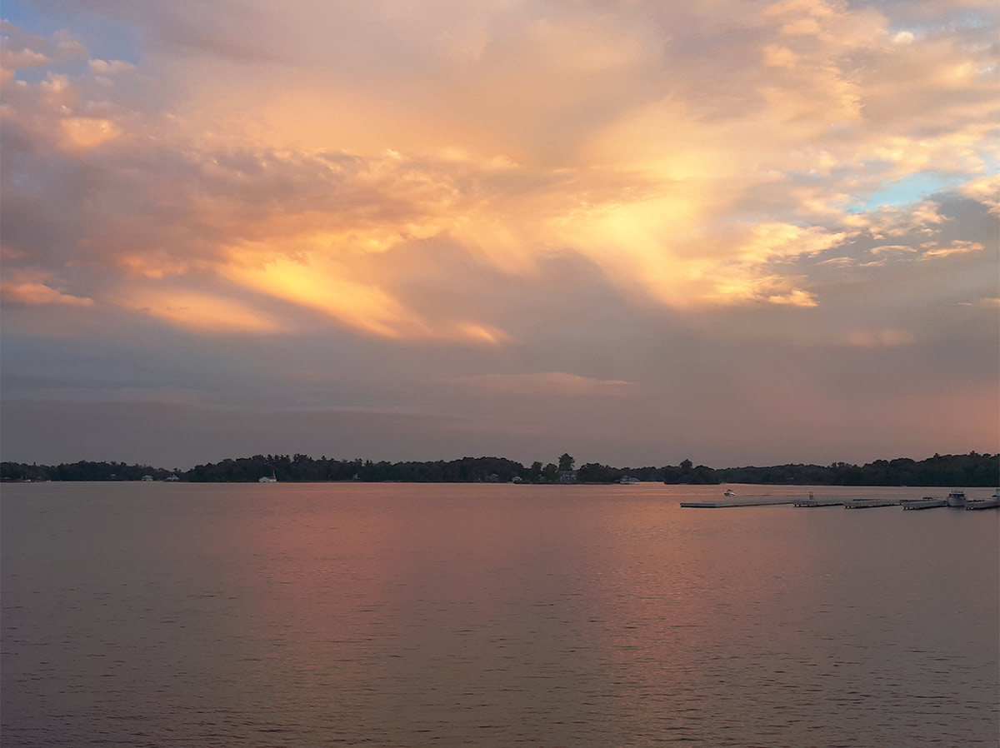

About
Alessia Signorino, born in a small town in the northern Italian province of Piemonte, currently calls Montreal home since 2008. She currently studies in Design with a Minor in Computation Arts at Concordia University. Her interest in the multidisciplinary process of construction began since her studies in architectural technology at Vanier College. She is interested in how humans create emotional connections with their surrounding fabricated and natural world. When she is not busy reading about current affairs, she can be found illustrating or assisting on film sets.